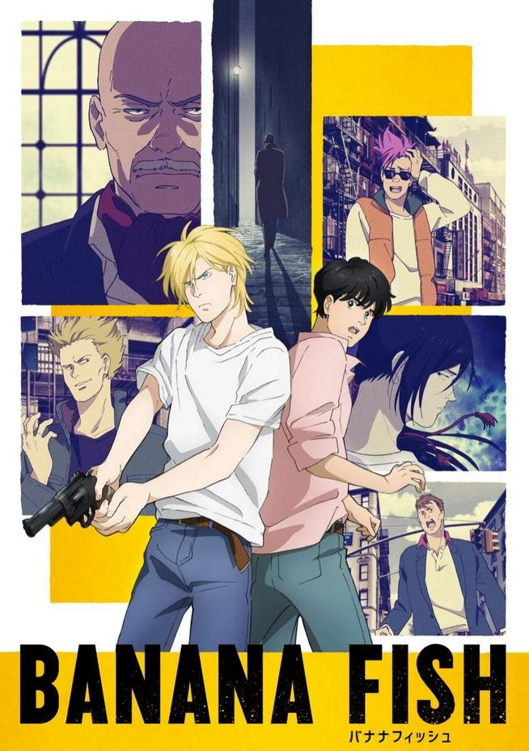
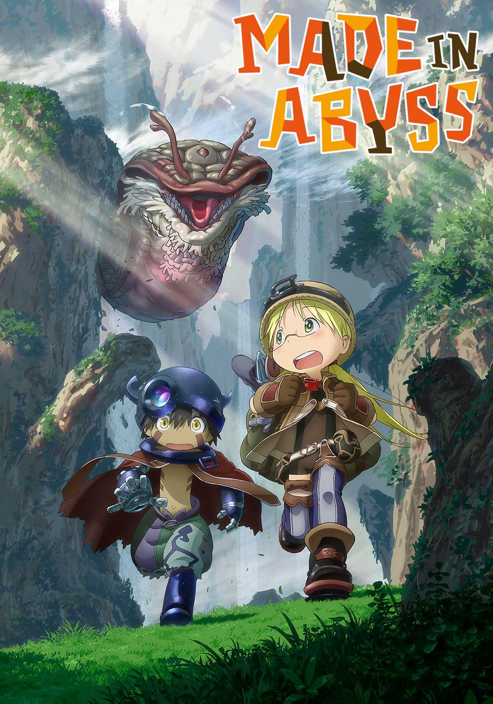

Banana Fish

Let’s initiate this kid into the chaotic world of New York gang life, slowly make him emotionally dependent on us while we hunt down the mystery of “Banana Fish,” and just for good measure throw in a little love-at-first-sigh.
Genre: Action, Drama, Psychological, Thriller
Episodes: 24
Read More Watch Here
Made In The Abyss

Living around Earth's massive butthole, a cyborg and a weird girl explore the deepest crevices. Will they be able to beat the curse and deadly gases?
Genre: Adventure, Drama, Fantasy, Horror, Mystery, Sci-Fi
Read More
Hunter X Hunter

Dad left for milk and never came back, so now the logical response is to pass a deadly exam just to ask him why.
Genre: Action, Adventure, Fantasy
Read More Watch Here
Noragami

A god with big dreams, zero money, and marketing strategies that involve writing his phone number on bathroom walls. A moody teenager. A high school girl with a tendency of almost always dying. What could possibly go wrong?
Genre: Action, Adventure, Comedy, Supernatural
Read More
One Piece

Currently, I'm on episode 1122 out of who knows. I've been watching this show since around Jan. 13 2019, damn that makes me feel old. Anime I think is just around finishing the Egghead Island Arc and I kind of need to play catch up. The most recent episode out right now is 1155, which means I have around 30 that I need to binge-watch.
As of right now I would rate this 8/10.
My favorite character? Hard to say, it depends on which pirate crew we talking about or the entire show. For the Straw Hats, it would be Zorro (used to be Sanji but after Wano, he gave me the ick). Overall, maybe Law and Bepo (yea a little basic). I don't like Chopper, annoying asf. He has been actually relegated to being the Straw Hat's mascot at this point.
Read More
Frieren: Beyond Journey's End

Oooohhhh the things I have to say about this anime. First of all, I'm not the type that likes watching slice of life soooo there's that. Everyone keep raving about how great it is, it even won anime of the year. I think it overrated, plain and simple. But I will force myself to watch the entirety of it just so I can bring receipts to when I hate on it. HAHHAHHAHAHAHHA.
So far I only managed to watch the first 2 episodes. Episode 1 took me about 3 days to finished because I found it so mind-numbingly boring. Episode 2, made it like 15 minutes in before having to take a break.
The characters also look to be bland.
5/10 and that is being generous and mostly due to the animation (execution) not the story or characters.
Read More
Don't Even get me started on...
Your Lie In April, A Silent Voice, not sad or maybe I'm just heartless.
Re:Zero boring as shit along witht he exicution.
Wait... They Had a Valid Point Though
Light Yagami - Death Note
Satin - My Hero Academia
Eran Yeager - Attack on Titan
Geto Suguru - Jujutsu Kaisen